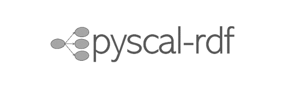

Data analysis and workflows in Materials science #

pyscal-rdf
pyscal_rdf is a python tool for ontology-based creation, manipulation, and quering of structures. pyscal_rdf combines the power of pyscal3 and the Computational Material Sample Ontology (CMSO) to create annotated structures than be queried.
rdfjobs
Extension package to pyscal-rdf that provides fully annotated simulation outputs using the workflow environment pyiron.